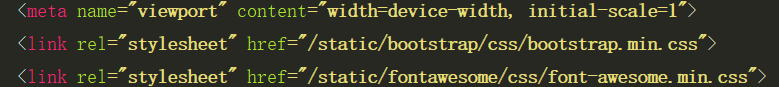
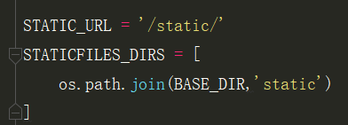

如图，我们看到的时html页面中静态文件的路径，其中/static/是settings.py中的设置：

假设我们将settings.py中的/static/改变了，这样的话我们还需要将html中的/static/一起改变，如果只有一个html页面还好，可是万一有很多html页面就麻烦了。所以对于这种情况，也有相应的措施。
1 {# <link rel="stylesheet" href="/static/bootstrap/css/bootstrap.min.css"> #}
2 {% load static %}
3 <link rel="stylesheet" href={% static 'bootstrap/css/bootstrap.min.css' %}>第一行是原代码，我们将其注释掉，再加上{% load static %},最后将原来的代码改成第三行的格式，这样的话，不论settings.py中/static/怎么变，我在html中都不用做出改变。